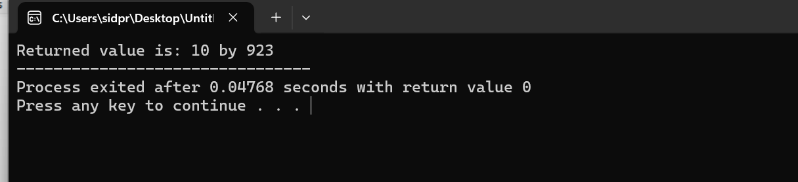
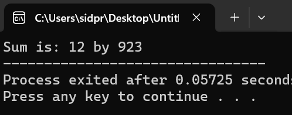
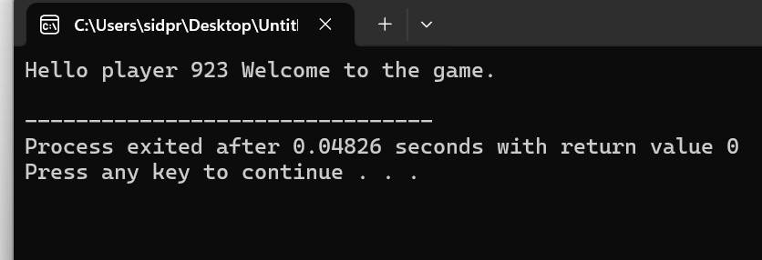
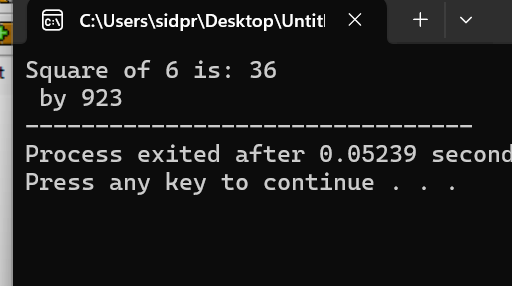
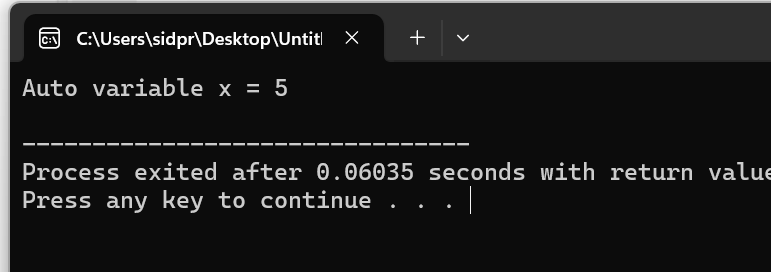
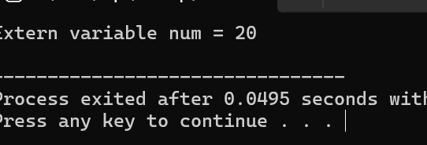
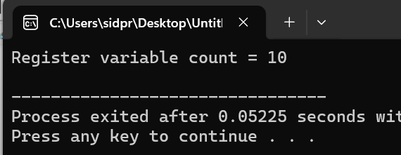
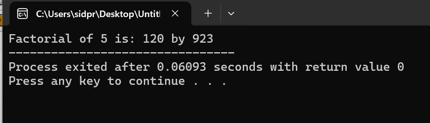
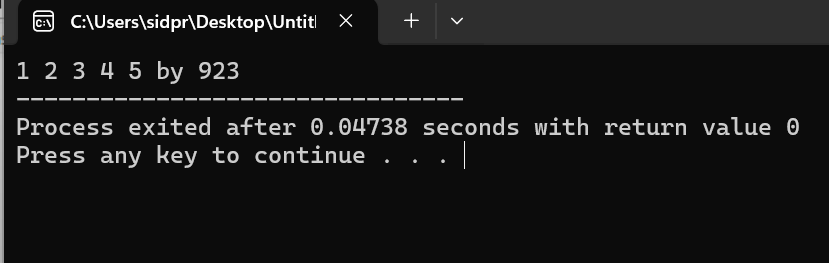

Functions in C
a.Define Functions
Defn:A function in C is a set of statements that, when called, perform some specific tasks. It is the basic building block of a C program that provides modularity and code reusability. They are also called subroutines or procedures in other languages.
b. Syntax of Functions
The basic syntax of a function in C/C++ is:
return_type function_name(parameters) {
// code to execute
}
Example:
void greet() {
printf("Hello, world!");
}
c. Types of Functions
1. Library Functions: These are built-in functions provided by the programming language, such as printf(), sqrt(), strlen().
2. User-defined Functions: These are functions that the programmer writes to perform specific tasks.
// User-defined function example
int add(int a, int b) {
return a + b;
}
d. Components of a Function
i. Function Prototype
Declares the function to the compiler before it is used. It includes the return type, function name, and parameters.
int add(int, int); // Function prototype
ii. Function Call
This is where you actually use the function in your code to perform its task.
int result = add(4, 5); // Function call
iii. Function Definition
This is the body of the function — the actual code that runs when the function is called.
int add(int a, int b) {
return a + b;
}
iv. Return Type
The return type tells the program what type of value the function will send back after it finishes running.
Common return types include:
int– returns an integerfloat– returns a decimal numberchar– returns a charactervoid– returns nothing
Example of a function with return type int:
int square(int num) {
return num * num;
}
Example of a function with void (returns nothing):
void greet() {
printf("Hello, world!");
}
2. Categories of Functions in C
i. Function with Return Type but No Arguments
This function returns a value, but it does not take any input (arguments).
#include <stdio.h>
int getNumber() {
int num = 10;
return num;
}
int main() {
int value = getNumber();
printf("Returned value is: %d by 923", value);
return 0;
}
Output:

ii. Function with Return Type and With Arguments
This function takes input values and returns a result.
#include <stdio.h>
int add(int a, int b) {
return a + b;
}
int main() {
int result = add(5, 7);
printf("Sum is: %d by 923", result);
return 0;
}
Output:

iii. Function with No Return Type and No Arguments
This function performs a task but doesn't return anything and doesn't take any input.
#include <stdio.h>
void greet() {
printf("Hello! player 923 Welcome to the game.\n");
}
int main() {
greet();
return 0;
}
Output:

iv. Function with No Return Type but With Arguments
This function takes input but does not return anything. It performs an action using the input.
#include <stdio.h>
void displaySquare(int num) {
printf("Square of %d is: %d\n by 923", num, num * num);
}
int main() {
displaySquare(6);
return 0;
}
Output:

3. Storage Classes in C
i. Automatic (auto)
Automatic variables are local to the function in which they are defined. This is the default
behavior for local variables, so writing auto is optional.
#include <stdio.h>
void demo() {
auto int x = 5;
printf("Auto variable x = %d\n", x);
}
int main() {
demo();
return 0;
}
Output:

ii. External (extern)
Extern tells the compiler that the variable exists somewhere else (outside the file or before main). It allows sharing variables across multiple files.
// File 1
#include <stdio.h>
int num = 20; // global variable
//File 2
extern int num;
int main() {
printf("Extern variable num = %d\n", num);
return 0;
}
Output:

iii. Register
Register variables are stored in CPU registers instead of RAM for faster access. You cannot get their memory address using & operator.
#include <stdio.h>
int main() {
register int count = 10;
printf("Register variable count = %d\n", count);
return 0;
}
Output:

iv. Static
Static variables retain their value between function calls. They're initialized only once and preserve their last value.
#include <stdio.h>
void counter() {
static int count = 0;
count++;
printf("Count = %d\n", count);
}
int main() {
counter();
counter();
counter();
return 0;
}
Output:
4. Recursive Function
A recursive function is a function that calls itself to solve smaller instances of a problem.
It must have a base case to stop the recursion and prevent infinite loops.
Syntax:
return_type function_name(parameters) {
if (base_condition)
return result;
else
return function_name(smaller_input);
}
Example: Factorial using recursion
#include <stdio.h>
int factorial(int n) {
if (n == 0)
return 1;
else
return n * factorial(n - 1);
}
int main() {
int result = factorial(5);
printf("Factorial of 5 is: %d", result);
return 0;
}
Output:

5. Passing Arrays to a Function
You can pass an array to a function in C by passing the array name, which is treated as a pointer to the first element.
The function can then loop over the array elements using a loop and the size.
Syntax:
void function_name(int arr[], int size) {
}
Example: Print all elements of an array
#include <stdio.h>
void printArray(int arr[], int size) {
int i;
for (i = 0; i < size; i++) {
printf("%d ", arr[i]);
}
}
int main() {
int nums[] = {1, 2, 3, 4, 5};
printArray(nums, 5);
printf("by 923");
return 0;
}
Output:
